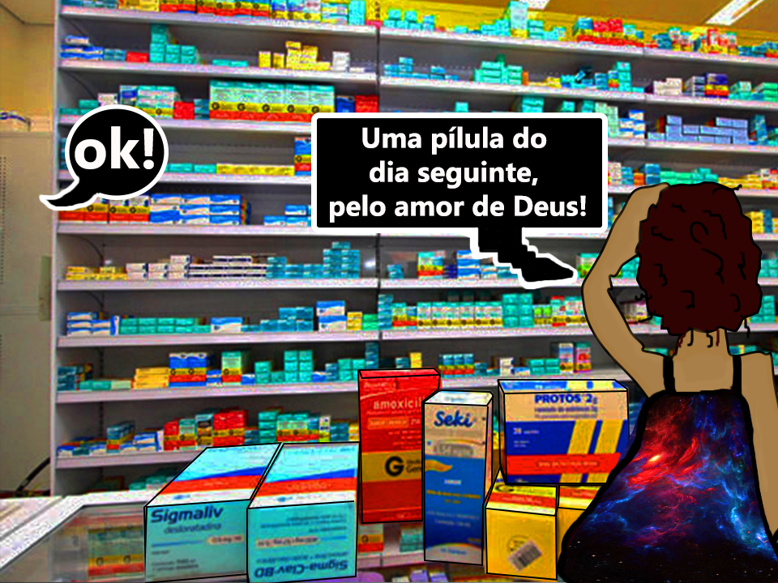

Início do Nosso Pesadelo - Retorno a Farmácia
Porém sabemos também que isso não funciona na realidade e a nossa volta (quando não somos nós mesmas) existem diversos casos de meninas que já tomaram 4, 5 pílulas ao ano, mesmo sabendo que quanto maior o gerenciamente deste medicamento no corpo, menor é a sua eficácia, infelizmente.